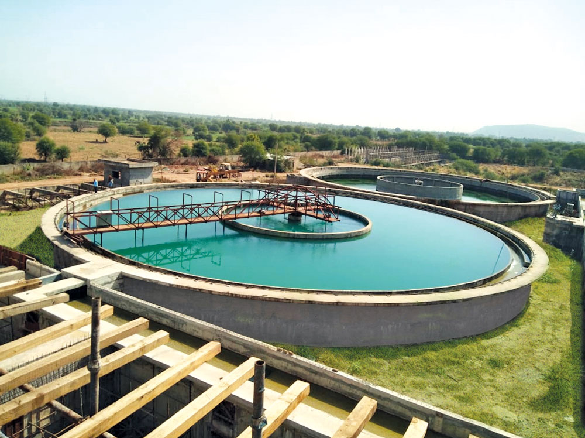
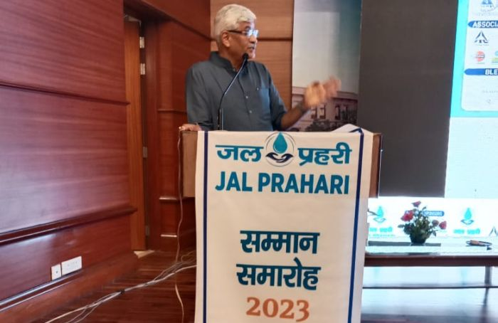

Date: September 22, 2023
Location: Sriperumbudur, Tamil Nadu
The Jal Jeevan Mission has successfully completed a water supply project in a rural area, providing clean and safe drinking water to thousands of households. This initiative is a significant step towards ensuring access to clean water for all in remote regions.
Date: September 23, 2023
Location: Sriperumbudur, Tamil Nadu
The Jal Jeevan Mission has initiated a comprehensive awareness campaign to educate communities on water conservation practices. The campaign aims to promote responsible water usage and sustainability.